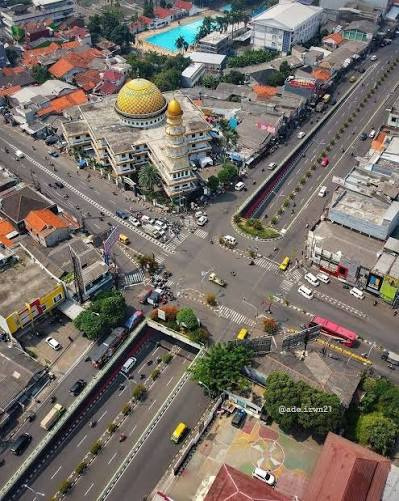

Kenali Ciledug, dari Sejarah hingga Kulinernya
Ciledug adalah kecamatan di Kota Tangerang, Banten, dengan wilayah persawahan dan rawa yang berkembang menjadi kawasan padat penduduk. Di sini Anda bisa menemukan jejak sejarah, lingkungan yang strategis, dan deretan kuliner yang sedang ramai dibicarakan.

Sejarah Kuliner Komunitas